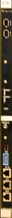
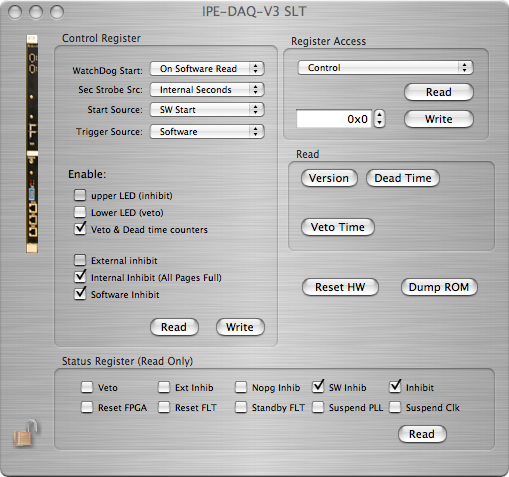

The second level trigger is a FPGA based trigger card build at the Institute of Data Processing and Electronics at Forschungszentrum Karlsruhe. It has been used in the Auger and Katrin experiments.
The SLT card icon looks like this in the configuration: 
It can only be placed in the first slot of the IPE-DAQ Crate object.

Here's a view of the SLT card dialog. The Slt provides central functions for the IPE-DAQ electronics. The card is used to store and initiate the configuration of the SLT and all FLTs. It provides a inhibit and trigger signal.
To enable the software trigger for all Flts the trigger source "software" has to be selected.
Using the inhibit source "external" the data aquisition can be controlled by an external hardware signal. Enable the deadtime counters to measure the effective run time.